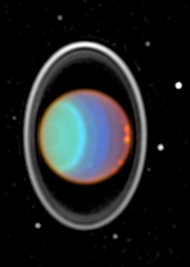
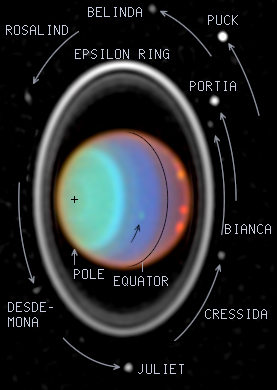

|
 |
|

| ||||
|
|
So Kepler's Laws describe the motion of Jupiter's moons. But they are far more universal than that: the describe the orbital motion of any object orbiting another. So they describe Saturn's moons orbiting Saturn, the planets orbits around the Sun, the Space Shuttle's orbit around the Earth, even distant stars orbiting one another.
In each case, Kepler's Third Law works, and if we know the period P and the distance a, we can solve for the mass of the thing being orbited.
So let's say we're visiting another solar system and we find a planet with three moons. If we measure the orbital period of those moons, and their distance from the planet, we've got the planet mass. Or we could even put ourselves in orbit around the planet, measure the time it takes to go around once and measure our distance to the planet's center and voila! -- we've got the mass that way, too.
Pretty handy thing, that Kepler's Third Law...
  Pictures of Uranus with its moons taken by the Hubble Telescope